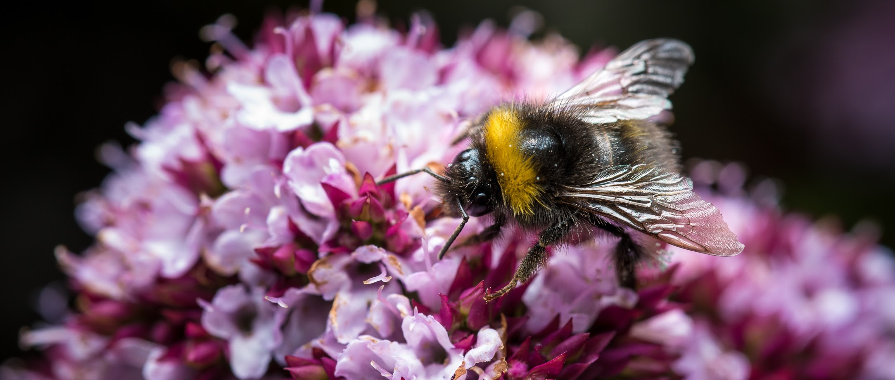

How coaching skills have made us better open data science mentors
February through May 2023, Openscapes Mentors from across governments and academia came together for some hands-on learning and practice that had a profound effect on the way we will teach and lead going forward. We learned coaching skills that can help us as professionals – skills like listening rather than solutioneering, asking open-ended questions that empower people to find their own agency and meet their needs. This is a program designed and facilitated by Tara Robertson, a Certified Professional Co-Active and International Coaching Federation Associate Certified Coach. Openscapes has been developing a professional collaborative relationship with Tara since 2021. It was also impactful because it brought together Openscapes Mentors from across government groups (NASA Earthdata, NOAA Fisheries, EPA, California Waterboard) so they can learn together and support each other in the 2023 Year of Open Science.
“This quietly subversive training showed me how to be a better mentor and coach by using new tools or old tools in better ways to hear what people are saying and help them find solutions within themselves…and by helping me get out of my own way in the process.” —Amanda Bradford, Research Ecologist, PIFSC, NOAA Fisheries
“This was amazing! I love the courses that make you feel uncomfortable and safe at the same time because that’s where change happens. It was such a positive growing experience. I was also able to connect with so many amazing people and that in itself was worth it. Learning from the others has expanded my views on coaching/mentoring/ etc so much!” —Alex Davis, The Diversity Project, UCLA
“This program provides a solid foundation for learning what goes into good mentoring and coaching conducted by an instructor who leads by example. When members of the group place their trust in the instructor and program, it becomes free group therapy with other scientists, where vulnerability is welcomed and mental breakthroughs are made. This bred an extremely comfortable and supportive cohort that I would like to keep in touch with!” — Alexis Hunzinger, NASA GES DISC Data Center
“This has been unlike any leadership training offered to us through typical NOAA/government channels. I think it has been a real eye opener to the importance of getting training outside of our typical (and comfortable) space” —Josh London, Wildlife Biologist at NOAA Alaska Fisheries Science Center
This program had a profound impact on the three of us too, as participants as well as program designers and facilitators. We are still trying to define what it was about the program, the process, and everyone involved that led to such a profound sense of trust among us so that we were able to be vulnerable and do courageous things. While these Openscapes Mentors have been collaborating as colleagues together within their organizations (e.g. as NASA Earthdata Mentors or Pathways to Open Science Mentors), this was the first time most of these folks met as a cross-Openscapes mentor community (besides brief encounters at virtual ESIP conference sessions in 2023 and 2022).
This truly was a cohort of early adopter “bright spots” - folks who wanted to be better mentors and grow as leaders, even if we didn’t know what that meant yet. Not only were folks working across organizations with other mentors they didn’t know, they were expert scientists being asked to step way outside their comfort zone and be novices. In this setting, they were enthusiastic and fearless learners. There was a really high rate of participation and very few people dropped off over the six sessions. We saw individual growth and impacts feeding back and forth: something introduced gently here that we can practice together makes us comfortable, and now we can take this to other spaces and introduce it gently to others too.
Designing a courageous space
We connected these bright spots by creating space and place. We met every 2 weeks for 6 remote sessions for a total of 12 hours. Twenty-eight people participated as part of their paid jobs, supported by their organizations rather than doing it “off the side of their desk”. We used a practice already familiar to all Openscapes Mentors: collaborative note-taking Agendas all in one Google doc where we had a shared responsibility to take notes, clarify explanations, add links to resources, and add shared joy and encouragement via emojis, +1’s and comments. We co-designed and helped each other when facilitating, which was instrumental when Tara got sick and lost her voice and Julie stepped in to facilitate the session based on Tara’s prep ahead of time.
The 6 sessions focused on specific topics: powerful questions, 3 levels of listening, identifying values, leader within, saboteurs and then taking these coaching skills into mentoring, supervising and sponsoring. For each of the topics, Tara briefly described the topic or skill, did a live demo with one of the participants, and the group described what they observed. Then, Tara gave us a topic to coach on, or some guardrails, and participants went into breakout rooms in pairs to practice coaching and being coached.
There was a lot of hands-on doing. Most of the participants said this was the best part of the course and also the most uncomfortable bit. In these pairs, the coaches were learning how to ask questions that help people open up…and this also challenged the coachees, who really dived into their needs and blockers for how to better support open science. It was also a testament to Tara’s own willingness to be vulnerable, demonstrating as a coachee and giving us her own real-life examples.
Thoughts from Tara: Something really special happened with this cohort. There were three main ingredients to this magic:
The participants were enthusiastic and fearless learners who were willing to step outside their comfort zones and learn new things together. This group of expert scientists from different organizations were willing to be beginner learners with each other. This group embodied courage.
We were intentional in the design to maximize psychological safety. At the start of Week 1 we designed an alliance together on how we wanted to be and learn together. I ordered the topics to start with the lower stakes topics and we were intentional about mixing people up across organizations. In the week 5 coaching demo one of the coaching demos the coachee chose to be quite vulnerable and bring a real challenge. This was a turning point where we saw that we can use these skills to surface challenging topics and have honest conversations about barriers in science.
Openscapes investment in coaching skills was a unique way to collectively learn some new skills AND build connections between open science leaders across different organizations and Openscapes initiatives: Mentors at NOAA Fisheries, NASA and from the growing Mentor community from CalEPA and Pathways to Open Science.
Building skills for listening not solutioneering
So called “soft skills” are anything but. This was hard. Learning to ask open ended questions was hard, and what was harder still was listening to be able to ask the next powerful question. How we listen differs whether we are in mentor-mode or coach-mode:
When we listen as mentors, we’re trying to understand where our expertise can help someone solve a problem.
When we’re listening as coaches, we’re trying to help the other person define their problem, and tap into their own wisdom to find their solution, likely outside of our domain expertise.
What do we mean by a “powerful question”? It’s a short question that can open up a really powerful conversation. It’s open-ended, usually starts with the word “What”, ideally is 5 words or less, and can’t be answered by yes or no. What feels like success to you? What’s in the way? What, if anything, is going unsaid? Which of your core values is being messed with?
Distinguishing when we’re listening as mentors and when we’re listening as coaches is important, because it determines how we will respond as early adopters who may not know the answer to the question – think cloud computing, how to store increasingly large data, how to give hard feedback to a superior, and how to ask for help in a culture built on competition and the myth of the lone genius. Developing these coach listening skills, including what questions to ask, has helped us help others better (and notice and avoid solutioneering!). It’s also helped us feel less overwhelmed as we learn that it’s okay to not always have the answer!
“We need these coaching skills to do powerful work and inspire meaningful connections; this program is a safe space to learn, to challenge our preconceptions, to practice, and to grow. I found it to be so invaluable because it’s a chance to acknowledge and learn about skills that are often unspoken in their ability to improve mentorship and collaboration.” — Ileana Fenwick
Thoughts from Stef. During the first two sessions, in the breakout rooms to practice coaching in pairs, I defaulted to talking more about the process and how we felt about it because actually practicing coaching, even with specific prompts, felt really really hard. But somehow over time, it got easier. Now I find myself trying out “powerful questions” with my peers in one-to-one conversations or coworking, rather than my usual behavior of suggesting solutions to people’s challenges. And people seem to respond!
But what really made this work?
People were primed for this based on their prior experiences as Openscapes Mentors. They came expecting a familiar set of norms and psychological safety that allowed them first to get comfortable and then to take risks. With this foundation, together we were able to build trust early on. This is key to developing healthy teams and communities. We all knew it would be worth it even if we didn’t know what we were getting into.
Often, to offer a program like this, an organization might contract an external professional to deliver it. We took it a step further. Openscapes contracted Tara, with whom we’ve collaborated before, and who is highly respected for her tell-it-like-it-is approach to diversity and inclusion. The core team of Tara, Julie, and me, worked to onboard ourselves and each other to this process using an open facilitation approach rather than working behind a curtain. We met frequently and defined our roles together, agreeing to role-model transparency and vulnerability and to name these things. Julie and I took turns managing breakout rooms each week so we could also take turns practicing coaching.
The mentors were not our students; they’re our peers and collaborators. Once people opted in, there was no judgment or “sorries” if someone was late or had to miss a session because of life’s responsibilities.
Practice! We moved away from analyzing and into the doing. It was uncomfortable and people still came and showed up as leaders
Building mindsets as leaders
Developing coaching skills also helped us build new mindsets. There was a braveness that grew throughout our time together that showed up in different ways. One person shared that they are more brave with whom/when/where they might interact as a coach and mentor. They had recently found themselves in-person with someone senior and rather than making nervous small talk found themselves asking powerful questions and really connecting with the senior person more, and felt that they both learned something in this short moment together.
We grew these new mindsets with our peers and built trust and community in a really profound way. The topics people surfaced and shared were so vulnerable – navigating racism, personal and structural saboteurs, and the integrations of personal and work life. We had never experienced such vulnerability in our work, and knew we could not shy away from difficult topics but needed to dig further and out based on the courage and trust in the room.
Thoughts from Julie. I’ve talked a lot about the impact of open data science on my career and my life. My science thinking was transformed when I realized I could do an analysis just as easily 100 times with a for-loop as doing it twice, and that I could publish my work via RMarkdown and GitHub to the open web and share via a single URL instead of sending followup emails with different versions of the same PDF or Word doc. Now, I am realizing that the impact of coaching on my thinking might be at this same level. I am still processing it all, but I am feeling more confident in places I have been struggling to show up as my full self. It is somehow helping me bring confidence into a room with me, knowing that I have new skills and a strengthened sense of shared braveness together with this cohort. When we first planned this cohort with Tara, this was new terrain. We asked ourselves, “If this is wildly successful what are the outcomes? What’s possible?“ Here are some ideas we laid out, and I think the Mentors are meeting each one:
People model inclusive behavior in work, life, Openscapes, and our home organizations, to influence culture change
People are braver, share stories and energy at work and other places
Someone speaks up in a meeting
Everyone learns something new! (me too!)
We listen better/differently
We scale participation - use coaching strategies to empower others sooner, so that existing mentors don’t burn out
More people feel safe in Openscapes and open science, and in turn, inspire others to be braver
Fearless in service of something
Working with Tara and bringing Openscapes Mentors across different organizations and initiatives is part of movement building with our Flywheel. This is a concept developed by Jim Collins that we adapted for Openscapes with Erin Robinson (Erin first brought coaching into Openscapes strategy and practices too!). Transformations occur from relentlessly pushing a giant, heavy flywheel that builds momentum over time. Using this model, we welcomed folks to opt in, created space and place so we could invest in learning and trust, and then worked openly together as we practiced as coaches and coachees, leveraging common experiences and skills. This turn of the flywheel is part of building the momentum of kinder and open science, building from past, parallel, and collaborative work from many places. Mentors are already inspiring others with their leadership, pushing the next turn of the flywheel.
Bravery has come up throughout this cohort and this post, and this braveness and fearlessness is in service of something. We’re wanting to connect our daily work with the global moment at hand, so we can better address issues stemming from climate change and social justice. As one participant said, “I don’t want to be scared to ask questions anymore”. We want to ask questions with no ego, in rooms with our science peers. We want to break the silences, opening up the rooms so that the next person who has a question but was not sure they would voice it is empowered to speak up.
In our final session we paired up to coach each other through developing our own statement of purpose in open science.
“I am an elevator to a better tomorrow”
“I am a pollinator who connects people to each other and ideas so everyone flourishes”
“I am the momentum that answers to my peers”
We are all the momentum that answers to our peers. To make meaningful change, we must work across all levels and elevate those who will be the change along with us.
 ::: {.caption-text .center-text} Photo by Elliot Lowndes :::